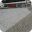
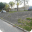
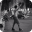

Picos
Favoritos
Ver todos-

Wallride da FPG
Júlia Fonseca -

Borda de valores
Júlia Fonseca -

Wallride do Rebouças
Júlia Fonseca -

Segunda setor da Praça Mauá
Júlia Fonseca -
Borda de valores
Júlia Fonseca -

Wallride do Rebouças
Júlia Fonseca
Mais visitados
Bruno Lopes
Gap do Itaú da Voluntários da Pátria
53 visualizações
Luiza Sampaio
Gap com mureta da Voluntários
53 visualizações
André Soares
Rampa da entrada do túnel Rebouças
53 visualizações
Júlia Fonseca